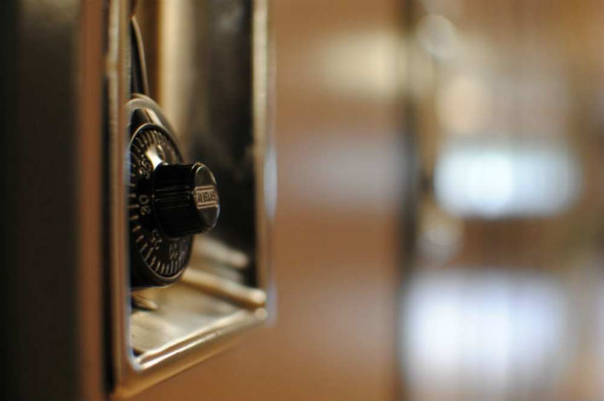

Hi! my name is Taman and I will be teaching you a little bit about the basics of photography such as the diffrent types of cameras and the diffrent types of photos and ideas.

Photography is a very fun and entertaining thing to do when you are bored, but to master it is another challenge. You have to know about the angles you put your camera at and how the camera funtions. It is a great idea to research to what kind of camera will fit your needs. Sometimes the most expensive camera isnt the type of camera that will fit your needs. You just need to go to a professional or even google it. There are lots of ways to help yourself.